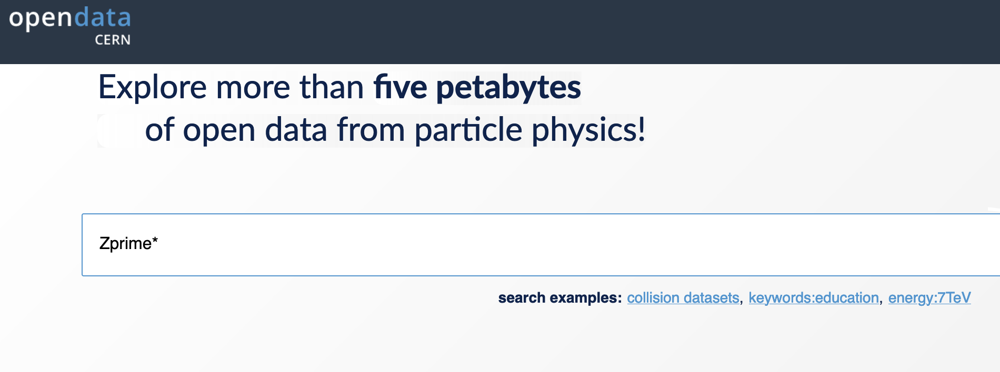
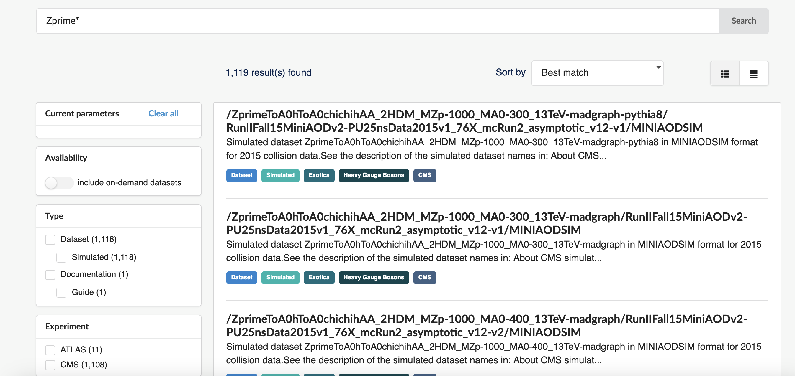
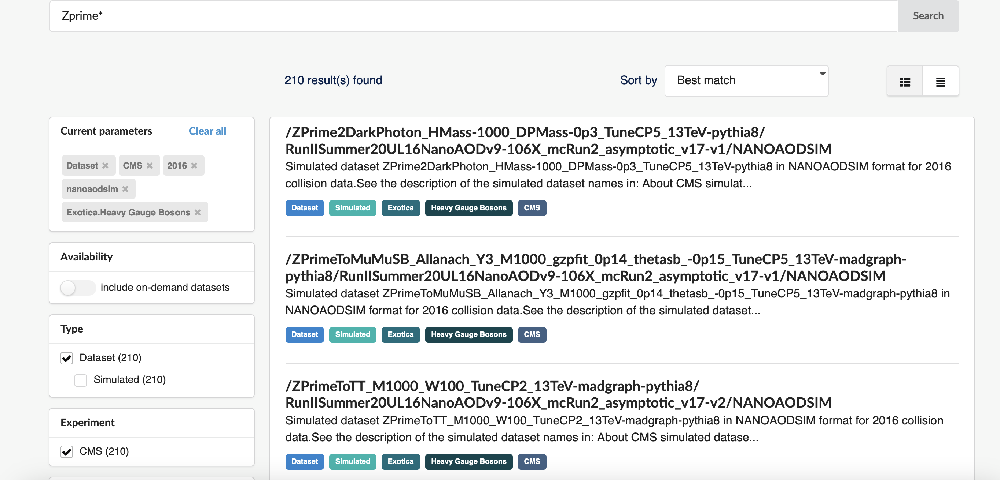
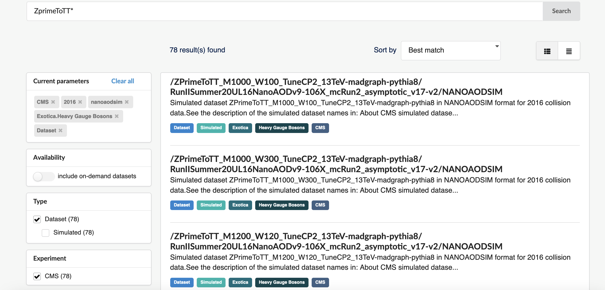

Finding and exploring a NanoAOD dataset
Last updated on 2026-07-14 | Edit this page
Estimated time: 35 minutes
Overview
Questions
- How do we find a specific nanoAOD dataset on the CERN Open Data Portal?
- How do we use
cernopendata-clientto get file locations for a dataset? - How do we explore the content of a nanoAOD simulation file?
Objectives
- Find a specific NANOAOD simulation dataset using the CERN Open Data Portal search tools
- Use
cernopendata-clientto retrieve file locations for a chosen dataset - Inspect the content of a NANOAOD file using python tools
Find and explore a nanoAOD dataset
Now that you know how to navigate the CERN Open Data Portal, use
cernopendata-client, and know a bit about NANOAOD format,
let’s apply those skills together in a concrete example. We’ll find and
explore simulated Z’ events in which the Z’ decays to a top and antitop
quark pair — a dataset we will use throughout the workshop.
A Z’ (“Z-prime”) is a hypothetical heavy gauge boson that could arise from extensions of the Standard Model. A review of searches for the Z’ can be found here.
Find the dataset
All data can be found via the CERN
Open Data Portal. Let’s search for simulated Z’ datasets. Dataset
naming in CMS can seem obscure, but we can start with a broad wildcard
search for Zprime*:

The query returns over 1000 records:

We can narrow the results by selecting Type: Dataset, Experiment: CMS, Year: 2016, File type: nanoaodsim, and Category: Heavy Gauge Bosons. This reduces the matches from over 1000 down to around 210:

We can now read the dataset names more easily: “Zprime” is the particle produced, followed by its decay products. We want \(Z^{'} \rightarrow t\bar{t}\), which appears as “ZprimeToTT”. Let’s narrow further:

Dataset naming
The dataset names encode several pieces of information:
- ZPrimeToTT — the particle produced and its decay (\(Z' \rightarrow t\bar{t}\))
- M1000 — the mass (in GeV) of the hypothetical Z’ (here, 1000 GeV)
- W100 — the width of the Z’ resonance (here, 100 GeV)
- TuneCP2 — the underlying-event tune used in PYTHIA8
- 13TeV — the center-of-mass energy of the collision
- madgraph-pythia8 — the event generators used (MadGraph for the hard process, PYTHIA8 for hadronization)
Several mass points are available in these results, spanning from 500 GeV to several TeV. The choice of mass point is part of your physics analysis strategy.
Exercises
Exercise 1: Get data file locations
Choose a ZprimeToTT sample for a given mass and use
cernopendata-client to retrieve the associated data file
locations.
Recall what you’ve learned about cernopendata-client
from Episode
4.
Search for ZprimeToTT samples in the CERN Open Data Portal using the filters above. The resulting query is here.
Select a dataset. Here we use record 75124, “Simulated dataset ZPrimeToTT_M1000_W100_TuneCP2_13TeV-madgraph-pythia8 in NANOAODSIM format for 2016 collision data” (Z’ mass = 1000 GeV).
Confirm the available commands:
OUTPUT
Usage: cernopendata-client [OPTIONS] COMMAND [ARGS]...
Command-line client for interacting with CERN Open Data portal.
Options:
--help Show this message and exit.
Commands:
download-files Download data files belonging to a record.
get-file-locations Get a list of data file locations of a record.
get-metadata Get metadata content of a record.
list-directory List contents of a EOSPUBLIC Open Data directory.
verify-files Verify downloaded data file integrity.
version Return cernopendata-client version.Fetch the file locations for record 75124:
OUTPUT
http://opendata.cern.ch/eos/opendata/cms/mc/RunIISummer20UL16NanoAODv9/ZPrimeToTT_M1000_W100_TuneCP2_13TeV-madgraph-pythia8/NANOAODSIM/106X_mcRun2_asymptotic_v17-v2/2520000/65A0736B-22F3-C94C-99AE-36717B28629C.root
http://opendata.cern.ch/eos/opendata/cms/mc/RunIISummer20UL16NanoAODv9/ZPrimeToTT_M1000_W100_TuneCP2_13TeV-madgraph-pythia8/NANOAODSIM/106X_mcRun2_asymptotic_v17-v2/2520000/6E508763-A12F-8846-A295-F39EE7DDAA52.root
http://opendata.cern.ch/eos/opendata/cms/mc/RunIISummer20UL16NanoAODv9/ZPrimeToTT_M1000_W100_TuneCP2_13TeV-madgraph-pythia8/NANOAODSIM/106X_mcRun2_asymptotic_v17-v2/2530000/7B2D5CD5-9CAE-C046-A9AB-50CE9D48B187.root
http://opendata.cern.ch/eos/opendata/cms/mc/RunIISummer20UL16NanoAODv9/ZPrimeToTT_M1000_W100_TuneCP2_13TeV-madgraph-pythia8/NANOAODSIM/106X_mcRun2_asymptotic_v17-v2/260000/1A50245D-8213-6340-8EA0-CB064EEC6AF3.root
http://opendata.cern.ch/eos/opendata/cms/mc/RunIISummer20UL16NanoAODv9/ZPrimeToTT_M1000_W100_TuneCP2_13TeV-madgraph-pythia8/NANOAODSIM/106X_mcRun2_asymptotic_v17-v2/270000/09FA6C37-21D6-7846-B3E1-F8086CBA0E9E.root
http://opendata.cern.ch/eos/opendata/cms/mc/RunIISummer20UL16NanoAODv9/ZPrimeToTT_M1000_W100_TuneCP2_13TeV-madgraph-pythia8/NANOAODSIM/106X_mcRun2_asymptotic_v17-v2/270000/3AAB5B1E-7169-9C4D-841C-CB2D6E40CBAE.root
http://opendata.cern.ch/eos/opendata/cms/mc/RunIISummer20UL16NanoAODv9/ZPrimeToTT_M1000_W100_TuneCP2_13TeV-madgraph-pythia8/NANOAODSIM/106X_mcRun2_asymptotic_v17-v2/270000/820C3EBC-0E1D-CE41-9418-FA1615123FC2.root
http://opendata.cern.ch/eos/opendata/cms/mc/RunIISummer20UL16NanoAODv9/ZPrimeToTT_M1000_W100_TuneCP2_13TeV-madgraph-pythia8/NANOAODSIM/106X_mcRun2_asymptotic_v17-v2/270000/CF54D079-349C-FB4F-B6E5-3D579D89EDE4.root
http://opendata.cern.ch/eos/opendata/cms/mc/RunIISummer20UL16NanoAODv9/ZPrimeToTT_M1000_W100_TuneCP2_13TeV-madgraph-pythia8/NANOAODSIM/106X_mcRun2_asymptotic_v17-v2/80000/E964C281-43FB-D349-A436-9A3FDA0BAA28.rootTo save these to a file for use in later analysis steps:
Exercise 2: Inspect the data file
Using the file locations from Exercise 1 and the python tools you learned about in Episode 5, open one of the Z’ simulation files and explore its contents. Launch Jupyter Lab:
What variables are available? How does the jet content compare to what you saw in the SingleMuon collision data file?
Import the necessary libraries in a notebook cell:
Open one of the Z’ files using the XRootD path:
PYTHON
file = uproot.open("http://opendata.cern.ch/eos/opendata/cms/mc/RunIISummer20UL16NanoAODv9/ZPrimeToTT_M1000_W100_TuneCP2_13TeV-madgraph-pythia8/NANOAODSIM/106X_mcRun2_asymptotic_v17-v2/2520000/65A0736B-22F3-C94C-99AE-36717B28629C.root")Check the top-level content blocks:
OUTPUT
{'tag;1': 'TObjString',
'Events;1': 'TTree',
'LuminosityBlocks;1': 'TTree',
'Runs;1': 'TTree',
'MetaData;1': 'TTree',
'ParameterSets;1': 'TTree'}Get the Events tree and list its variables:
You will see the same variable structure as in the collision data,
but with additional Monte Carlo fields such as GenPart_*
(generator-level particles) and genWeight. Because this is
a \(Z' \rightarrow t\bar{t}\)
sample, the events contain many jets from the top quark decays. Fetch
the AK4 jet transverse momentum:
Plot the distribution:
PYTHON
plt.hist(ak.flatten(jet_pt), bins=100, range=(0, 500))
plt.xlabel('Jet $p_T$ [GeV]')
plt.ylabel('Entries')
plt.title('AK4 jet $p_T$ — ZPrimeToTT M1000')
plt.show()Compare the number of jets per event to what you saw in the SingleMuon data:
You should observe a higher jet multiplicity here than in a typical collision data event, consistent with the two top quarks each decaying to a W boson and a b quark, with the W bosons decaying further.
To see the generator-level top quarks, look at the
GenPart_* variables. For example, inspect the PDG IDs of
the generated particles:
A PDG ID of 6 corresponds to a top quark and -6 to an antitop quark.
- Use the CERN Open Data Portal search filters (experiment, year, file type, category) to efficiently locate specific simulation datasets.
- Dataset names encode the physics process, particle mass and width, collision energy, and generator software.
-
cernopendata-clientretrieves file locations programmatically, making it easy to script dataset access. - NANOAODSIM files contain the same reconstructed-object variables as
collision NANOAOD files, plus generator-level information such as
GenPart_*andgenWeight.